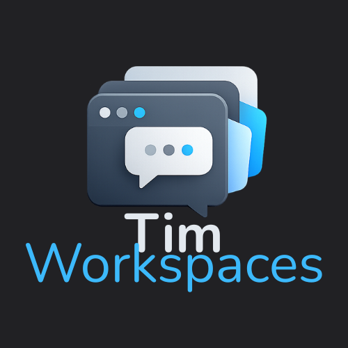

Instruções de instalação
Problemas comuns e como resolver
Windows — SmartScreen
O Microsoft Defender SmartScreen pode bloquear: "O Windows protegeu seu PC" ou "Um app não reconhecido foi impedido de iniciar".
O app é open source e não possui certificado de assinatura. Código público no GitHub.
Como executar:
- 1Clique em Mais informações
- 2Clique em Executar assim mesmo
Linux — .deb
Instale com dpkg -i timworkspaces_*.deb ou use o instalador gráfico do seu ambiente. Se faltar dependências, o sistema deve indicar (ex.: libfuse2 no Ubuntu).